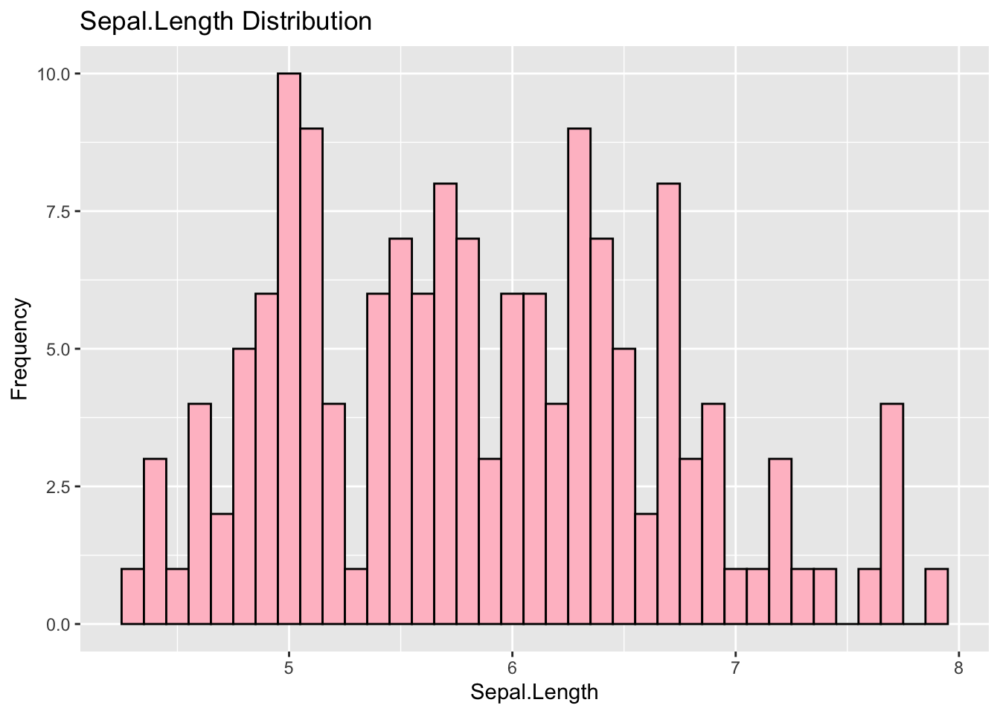
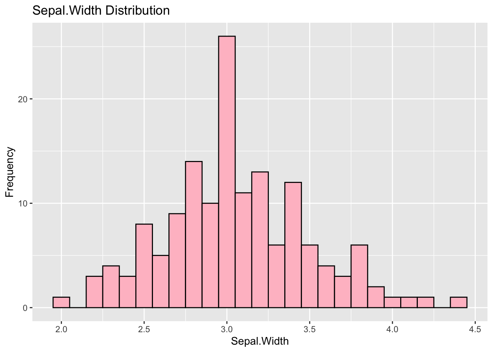
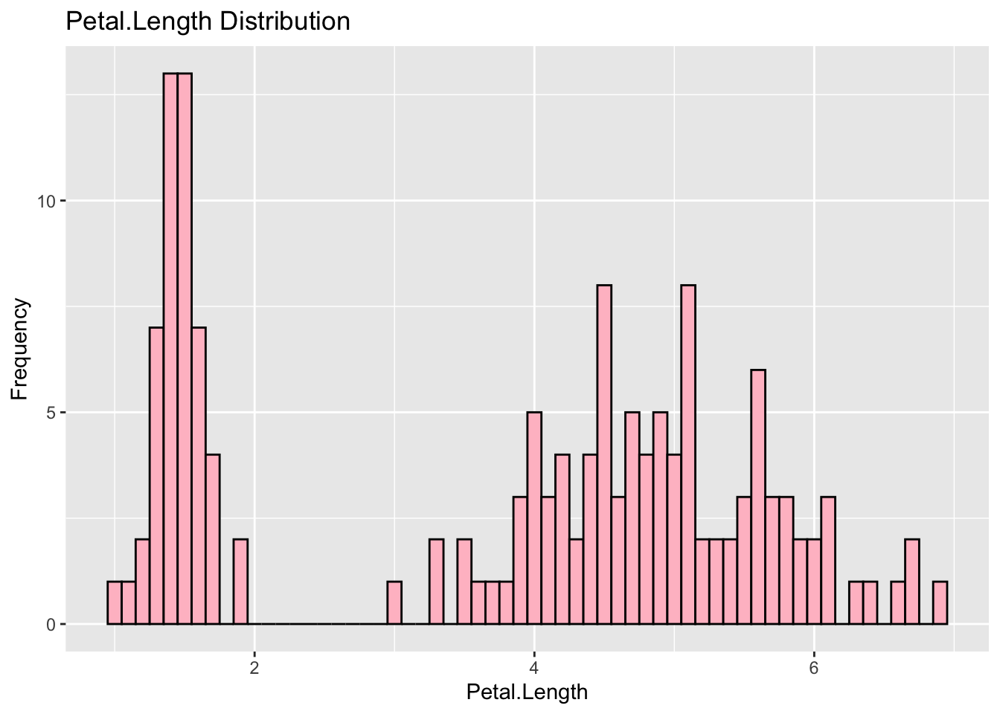
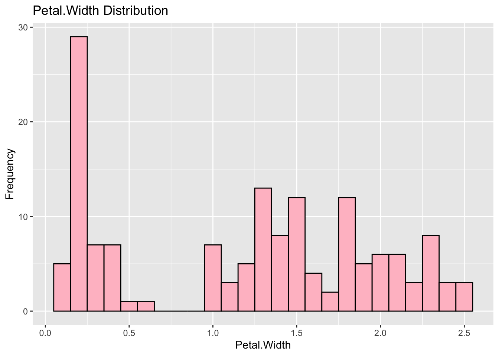
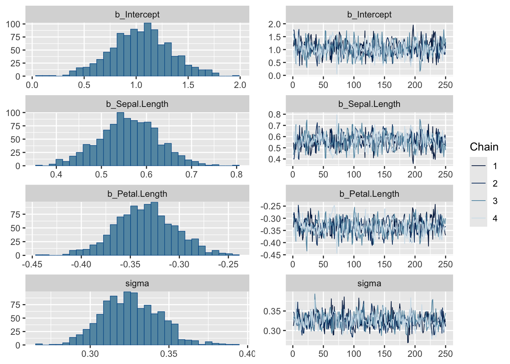
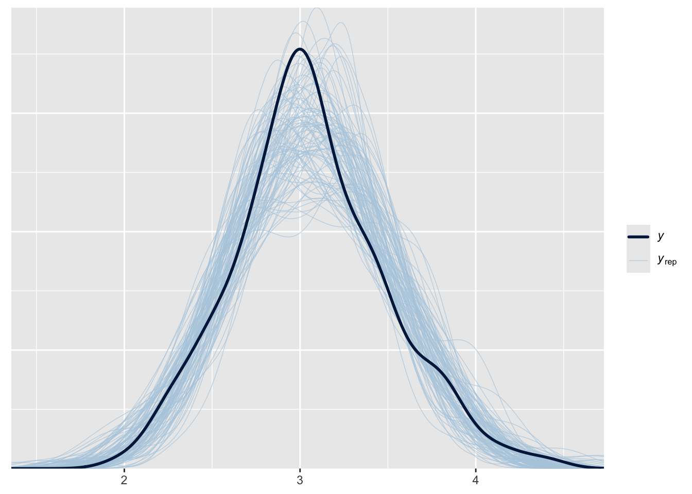

library(datasets) #to open the dataset
library(rstan)
library(brms)
library(knitr)
library(psych) #to summary statistics
library(tidyverse) # for data manipulation and plotting
library(marginaleffects) # get posteriors
library(ggeffects) # graph
library(easystats) # easystats packages # bayesttestR
library(bayesplot) # graph trace plots
library(ggdist) # graph distributions and geomsIn this tutorial, I will show how to do a Bayesian regression using brms!
So, the first thing to answer is why use a Bayesian regression..
Compared to an Ordinary Least Squares regression, a Bayesian regression allows us to determine distributions for the model parameters, instead of point estimate and a confidence interval. It is based on the Bayes’ Rule, a theorem that defines how the events of conditional probabilities relate with each other:
\[ P[A|B] = \frac{P[A \& B]}{P[B]} = P[B|A] \frac{P[A]}{P[B]} \]
In our case, we want to estimate A (the model parameters) given B (some data):
\[ P[model|data] = P[data|model] \frac{P[model]}{P[data]} \]
In Bayesian inference (we want to infer the model parameters) we use some especif names for each term of the equation:
\[ Posterior = Likelihood \frac{Prior}{Normalization} \]
The Posterior is the posterior probability distribution of the model parameters that we want to estimate. The Likelihood is the probability of observing the data given the model we are considering. The Prior is the prior probability distribution for the model parameters. If we have knowledge of the phenomenon, we can include it in the model by choosing some specific prior that reflects our knowledge. However, if we don’t have any previous expectations, we can use non-informative priors (such as a normal distribution) for the parameters.
Now we can follow with the application of these ideas:
The first part is loading the necessary packages:
In this tutorial, we will use data from the Iris data set - maybe one of the most famous data sets ever. It was used by the British statistician and biologist Ronald Fisher to show how to distinguish three different, but related, species of Iris flowers using their morphological features. Edgar Anderson collected the data when he was trying to quantify the morphological variation of them.
Data description:
50 samples from each of the three species (Iris setosa, Iris virginica and Iris versicolor);
Features:
length of the sepals
length of the petals
width of the sepals
width of the petals.
Opening and inspecting the data:
data(iris)
summary(iris) Sepal.Length Sepal.Width Petal.Length Petal.Width
Min. :4.300 Min. :2.000 Min. :1.000 Min. :0.100
1st Qu.:5.100 1st Qu.:2.800 1st Qu.:1.600 1st Qu.:0.300
Median :5.800 Median :3.000 Median :4.350 Median :1.300
Mean :5.843 Mean :3.057 Mean :3.758 Mean :1.199
3rd Qu.:6.400 3rd Qu.:3.300 3rd Qu.:5.100 3rd Qu.:1.800
Max. :7.900 Max. :4.400 Max. :6.900 Max. :2.500
Species
setosa :50
versicolor:50
virginica :50
Exploring the data:
ggplot(iris, aes(x = Sepal.Length)) +
geom_histogram(binwidth = 0.1, fill = "pink", color = "black") +
labs(title = "Sepal.Length Distribution", x = "Sepal.Length", y = "Frequency")
ggplot(iris, aes(x = Sepal.Width)) +
geom_histogram(binwidth = 0.1, fill = "pink", color = "black") +
labs(title = "Sepal.Width Distribution", x = "Sepal.Width", y = "Frequency")
ggplot(iris, aes(x = Petal.Length)) +
geom_histogram(binwidth = 0.1, fill = "pink", color = "black") +
labs(title = "Petal.Length Distribution", x = "Petal.Length", y = "Frequency")
ggplot(iris, aes(x = Petal.Width)) +
geom_histogram(binwidth = 0.1, fill = "pink", color = "black") +
labs(title = "Petal.Width Distribution", x = "Petal.Width", y = "Frequency")
In this tutorial we will investigate the impact of sepal and petals length on the sepal width (our outcome variable), independent of the species. In the future, you can try to do other interesting analysis, as assessing how much these features predict the length of the petals for each one of the species.
In a Bayesian approach, we use a first belief of how likely is some hypothesis (prior) to be able to derive the probability of this hypothesis (posterior) after using the prior with the data we have.
The specification of the prior distribution is a crucial point. In our case, we will use a normal distribution (a non-informative prior). This distribution represent our prior belief on the parameters’s distribution, in our case, we are considering it almost like a null hypothesis (if the parameters of our model are zero, this is equivalent to say there is no relationship between the dependent and independent variables).
# Specifying our prior distribution
prior <- brms::prior(normal(0, 10), class=b) #set normal prior on regression coefficients (mean of 0,std 10)So, now we run or Bayesian regression by specifying our model:
model <- brm(formula = Sepal.Width ~ Sepal.Length + Petal.Length,
data = iris,
seed = 123,
prior = prior,
chains=4, # how many chains are run
iter = 500) # number of MCMC samplesRunning /Library/Frameworks/R.framework/Resources/bin/R CMD SHLIB foo.c
using C compiler: ‘Apple clang version 15.0.0 (clang-1500.3.9.4)’
using SDK: ‘MacOSX14.4.sdk’
clang -arch arm64 -I"/Library/Frameworks/R.framework/Resources/include" -DNDEBUG -I"/Library/Frameworks/R.framework/Versions/4.3-arm64/Resources/library/Rcpp/include/" -I"/Library/Frameworks/R.framework/Versions/4.3-arm64/Resources/library/RcppEigen/include/" -I"/Library/Frameworks/R.framework/Versions/4.3-arm64/Resources/library/RcppEigen/include/unsupported" -I"/Library/Frameworks/R.framework/Versions/4.3-arm64/Resources/library/BH/include" -I"/Library/Frameworks/R.framework/Versions/4.3-arm64/Resources/library/StanHeaders/include/src/" -I"/Library/Frameworks/R.framework/Versions/4.3-arm64/Resources/library/StanHeaders/include/" -I"/Library/Frameworks/R.framework/Versions/4.3-arm64/Resources/library/RcppParallel/include/" -I"/Library/Frameworks/R.framework/Versions/4.3-arm64/Resources/library/rstan/include" -DEIGEN_NO_DEBUG -DBOOST_DISABLE_ASSERTS -DBOOST_PENDING_INTEGER_LOG2_HPP -DSTAN_THREADS -DUSE_STANC3 -DSTRICT_R_HEADERS -DBOOST_PHOENIX_NO_VARIADIC_EXPRESSION -D_HAS_AUTO_PTR_ETC=0 -include '/Library/Frameworks/R.framework/Versions/4.3-arm64/Resources/library/StanHeaders/include/stan/math/prim/fun/Eigen.hpp' -D_REENTRANT -DRCPP_PARALLEL_USE_TBB=1 -I/opt/R/arm64/include -fPIC -falign-functions=64 -Wall -g -O2 -c foo.c -o foo.o
In file included from <built-in>:1:
In file included from /Library/Frameworks/R.framework/Versions/4.3-arm64/Resources/library/StanHeaders/include/stan/math/prim/fun/Eigen.hpp:22:
In file included from /Library/Frameworks/R.framework/Versions/4.3-arm64/Resources/library/RcppEigen/include/Eigen/Dense:1:
In file included from /Library/Frameworks/R.framework/Versions/4.3-arm64/Resources/library/RcppEigen/include/Eigen/Core:19:
/Library/Frameworks/R.framework/Versions/4.3-arm64/Resources/library/RcppEigen/include/Eigen/src/Core/util/Macros.h:679:10: fatal error: 'cmath' file not found
#include <cmath>
^~~~~~~
1 error generated.
make: *** [foo.o] Error 1
SAMPLING FOR MODEL 'anon_model' NOW (CHAIN 1).
Chain 1:
Chain 1: Gradient evaluation took 1.8e-05 seconds
Chain 1: 1000 transitions using 10 leapfrog steps per transition would take 0.18 seconds.
Chain 1: Adjust your expectations accordingly!
Chain 1:
Chain 1:
Chain 1: Iteration: 1 / 500 [ 0%] (Warmup)
Chain 1: Iteration: 50 / 500 [ 10%] (Warmup)
Chain 1: Iteration: 100 / 500 [ 20%] (Warmup)
Chain 1: Iteration: 150 / 500 [ 30%] (Warmup)
Chain 1: Iteration: 200 / 500 [ 40%] (Warmup)
Chain 1: Iteration: 250 / 500 [ 50%] (Warmup)
Chain 1: Iteration: 251 / 500 [ 50%] (Sampling)
Chain 1: Iteration: 300 / 500 [ 60%] (Sampling)
Chain 1: Iteration: 350 / 500 [ 70%] (Sampling)
Chain 1: Iteration: 400 / 500 [ 80%] (Sampling)
Chain 1: Iteration: 450 / 500 [ 90%] (Sampling)
Chain 1: Iteration: 500 / 500 [100%] (Sampling)
Chain 1:
Chain 1: Elapsed Time: 0.006 seconds (Warm-up)
Chain 1: 0.005 seconds (Sampling)
Chain 1: 0.011 seconds (Total)
Chain 1:
SAMPLING FOR MODEL 'anon_model' NOW (CHAIN 2).
Chain 2:
Chain 2: Gradient evaluation took 2e-06 seconds
Chain 2: 1000 transitions using 10 leapfrog steps per transition would take 0.02 seconds.
Chain 2: Adjust your expectations accordingly!
Chain 2:
Chain 2:
Chain 2: Iteration: 1 / 500 [ 0%] (Warmup)
Chain 2: Iteration: 50 / 500 [ 10%] (Warmup)
Chain 2: Iteration: 100 / 500 [ 20%] (Warmup)
Chain 2: Iteration: 150 / 500 [ 30%] (Warmup)
Chain 2: Iteration: 200 / 500 [ 40%] (Warmup)
Chain 2: Iteration: 250 / 500 [ 50%] (Warmup)
Chain 2: Iteration: 251 / 500 [ 50%] (Sampling)
Chain 2: Iteration: 300 / 500 [ 60%] (Sampling)
Chain 2: Iteration: 350 / 500 [ 70%] (Sampling)
Chain 2: Iteration: 400 / 500 [ 80%] (Sampling)
Chain 2: Iteration: 450 / 500 [ 90%] (Sampling)
Chain 2: Iteration: 500 / 500 [100%] (Sampling)
Chain 2:
Chain 2: Elapsed Time: 0.005 seconds (Warm-up)
Chain 2: 0.005 seconds (Sampling)
Chain 2: 0.01 seconds (Total)
Chain 2:
SAMPLING FOR MODEL 'anon_model' NOW (CHAIN 3).
Chain 3:
Chain 3: Gradient evaluation took 2e-06 seconds
Chain 3: 1000 transitions using 10 leapfrog steps per transition would take 0.02 seconds.
Chain 3: Adjust your expectations accordingly!
Chain 3:
Chain 3:
Chain 3: Iteration: 1 / 500 [ 0%] (Warmup)
Chain 3: Iteration: 50 / 500 [ 10%] (Warmup)
Chain 3: Iteration: 100 / 500 [ 20%] (Warmup)
Chain 3: Iteration: 150 / 500 [ 30%] (Warmup)
Chain 3: Iteration: 200 / 500 [ 40%] (Warmup)
Chain 3: Iteration: 250 / 500 [ 50%] (Warmup)
Chain 3: Iteration: 251 / 500 [ 50%] (Sampling)
Chain 3: Iteration: 300 / 500 [ 60%] (Sampling)
Chain 3: Iteration: 350 / 500 [ 70%] (Sampling)
Chain 3: Iteration: 400 / 500 [ 80%] (Sampling)
Chain 3: Iteration: 450 / 500 [ 90%] (Sampling)
Chain 3: Iteration: 500 / 500 [100%] (Sampling)
Chain 3:
Chain 3: Elapsed Time: 0.008 seconds (Warm-up)
Chain 3: 0.006 seconds (Sampling)
Chain 3: 0.014 seconds (Total)
Chain 3:
SAMPLING FOR MODEL 'anon_model' NOW (CHAIN 4).
Chain 4:
Chain 4: Gradient evaluation took 1e-06 seconds
Chain 4: 1000 transitions using 10 leapfrog steps per transition would take 0.01 seconds.
Chain 4: Adjust your expectations accordingly!
Chain 4:
Chain 4:
Chain 4: Iteration: 1 / 500 [ 0%] (Warmup)
Chain 4: Iteration: 50 / 500 [ 10%] (Warmup)
Chain 4: Iteration: 100 / 500 [ 20%] (Warmup)
Chain 4: Iteration: 150 / 500 [ 30%] (Warmup)
Chain 4: Iteration: 200 / 500 [ 40%] (Warmup)
Chain 4: Iteration: 250 / 500 [ 50%] (Warmup)
Chain 4: Iteration: 251 / 500 [ 50%] (Sampling)
Chain 4: Iteration: 300 / 500 [ 60%] (Sampling)
Chain 4: Iteration: 350 / 500 [ 70%] (Sampling)
Chain 4: Iteration: 400 / 500 [ 80%] (Sampling)
Chain 4: Iteration: 450 / 500 [ 90%] (Sampling)
Chain 4: Iteration: 500 / 500 [100%] (Sampling)
Chain 4:
Chain 4: Elapsed Time: 0.007 seconds (Warm-up)
Chain 4: 0.005 seconds (Sampling)
Chain 4: 0.012 seconds (Total)
Chain 4: Visualize the distribution of values for each parameters and the chains convergence.
plot(model)
Now we will analyze and interpret the coefficients:
summary(model) Family: gaussian
Links: mu = identity; sigma = identity
Formula: Sepal.Width ~ Sepal.Length + Petal.Length
Data: iris (Number of observations: 150)
Draws: 4 chains, each with iter = 500; warmup = 250; thin = 1;
total post-warmup draws = 1000
Regression Coefficients:
Estimate Est.Error l-95% CI u-95% CI Rhat Bulk_ESS Tail_ESS
Intercept 1.04 0.29 0.47 1.62 1.01 601 667
Sepal.Length 0.56 0.07 0.43 0.69 1.01 514 461
Petal.Length -0.33 0.03 -0.40 -0.28 1.01 529 437
Further Distributional Parameters:
Estimate Est.Error l-95% CI u-95% CI Rhat Bulk_ESS Tail_ESS
sigma 0.33 0.02 0.29 0.36 1.00 626 620
Draws were sampled using sampling(NUTS). For each parameter, Bulk_ESS
and Tail_ESS are effective sample size measures, and Rhat is the potential
scale reduction factor on split chains (at convergence, Rhat = 1).We can see from the summary that our chains have converged sufficiently (rhat close to 1).
The length of the sepals seems to be a relevant predictor of the length of the petals for iris flowers, with a posterior mean regression coefficient of 1.78, 95% Credibility Interval [1.65, 1.90]. The length of the petals are also relevant predictors, with a posterior mean of -0.33, and a 95% credibility Interval of [-1.40, -0.28]. Since the intervals do not include zero, we can be fairly sure there is an effect.
Now, we will analyze the posterior distribution:
pp_check(model, ndraws=100)
Analyzing the posterior, we see that the samples from the posterior predictive distribution (y_rep) seems to capture really well the observed data (y).Thus, we learned that the sepal width is not independent on the length of the sepals and the length of the petals. We also learned the distributions of values for our model parameters that can significantly predict sepal width given the length of the sepals and petals.
Next week we will see how to make our model better!
We can try other priors and then compare different models. We can also test interaction terms between the predictors, and check if all the predictor variables are really necessary.